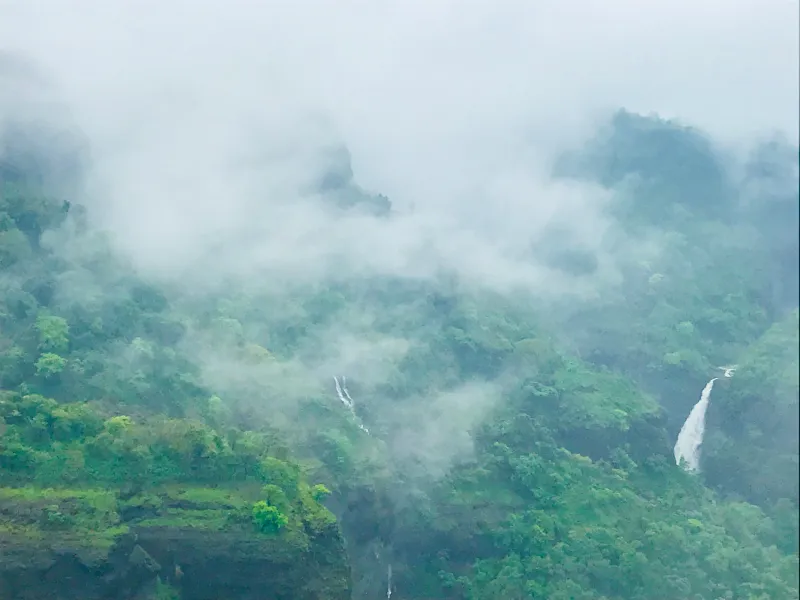

Places to Visit in Winter
Snowy Ski Resort
Hit the slopes at Snowy Ski Resort, known for its excellent skiing conditions and cozy lodges.

Maredumilli
Maredumilli, located in Andhra Pradesh, is a picturesque destination known for its lush green forests, waterfalls, and rich tribal culture.

lonavala
Lonavala city is one of the most beautiful retreats, that takes you away from the maddening rush of the metropolises. It is located in the western part of India in the Pune district of Maharashtra